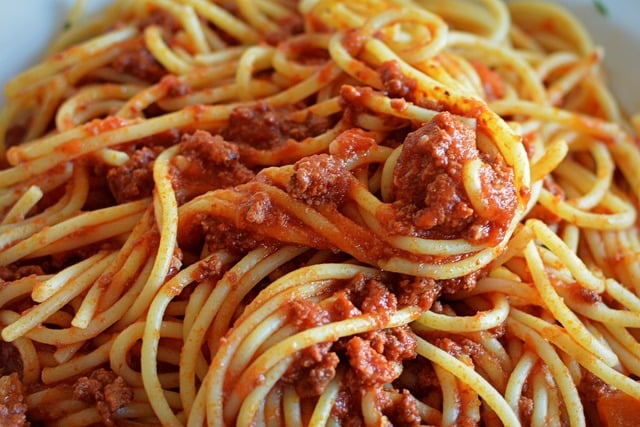

Spaghetti with meat sauce

Description
This is a simplified spaghetti recipe that I cooked recently. This was the first time I ever cooked spaghetti by myself, so the recipe can definitely be improved. Now, this version of the classic pasta recipe doesn't include many ingredients, so its not that expensive to make. It was also not very difficult because of how simple it is. Though it may not have very much flavor, you can always add salt or other spices to taste after you finish making it.
Ingredients
- One pound of spaghetti noodles
- One jar of spaghetti sauce
- One pound of ground beef
Steps
- Bring 4 quarts of water in a pot to boil. Make sure that there is at least enough water for the noodles to settle into.
- Cook pasta in boiling water for 10-12 minutes.
- Once the pasta has cooked to your preffered tenderness, pour the noodles into a colander to drain water from the noodles.
- Return the noodles to the pot, and set the noodles back on the stove on low heat to keep warm while you cook the meat.
- Set your stove to medium-high heat and place the pound of ground beef directly in the pan. The fats from the beef will prevent the meat from sticking to the pan.
- As the beef is cooking, begin breaking it apart into small chunks. Make sure that the meat gets cooked thoroughly and gets a nice brown chunky look to it.
- Cook the beef until it is all brown, chunky, and cooked all the way through.
- Once the meat has finished cooking, lower the heat and pour a jar of your favorite spaghetti sauce and continue cooking the meat in the sauce. Stir occasionally to get the sauce into the meat. You may add salt, pepper or any seasoning you like onto the meat sauce.
- When the sauce starts to bubble a little, pour the meat sauce into the pot of pasta and stir it until the sauce is evenly spread around your noodles.
- Finally, serve onto a plate and enjoy! Add spices or parmessean to taste.
Home Page